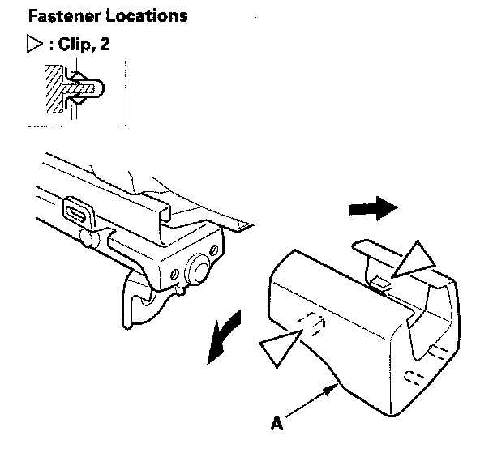
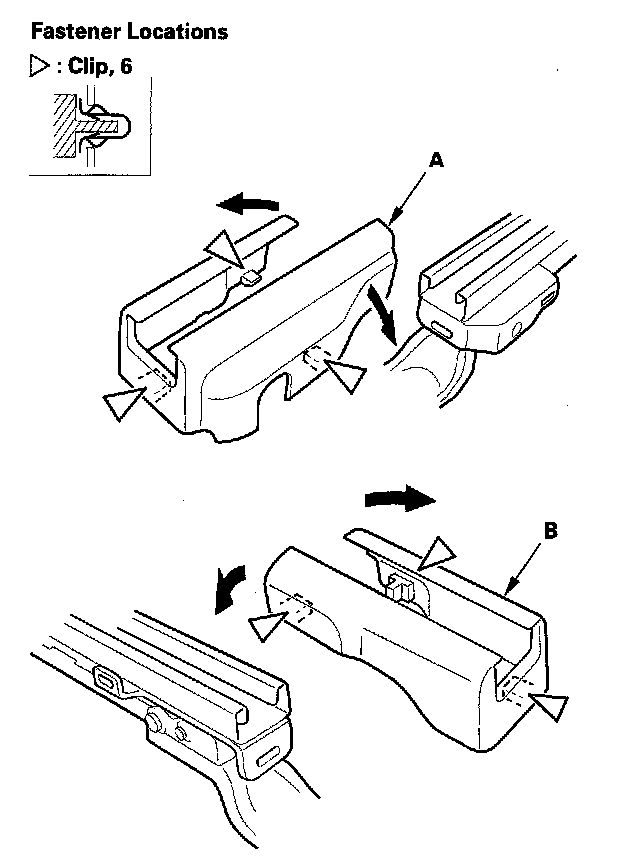
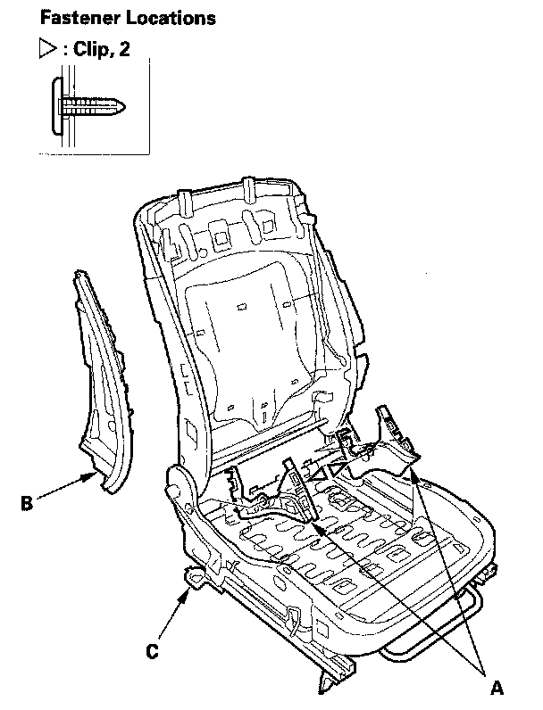
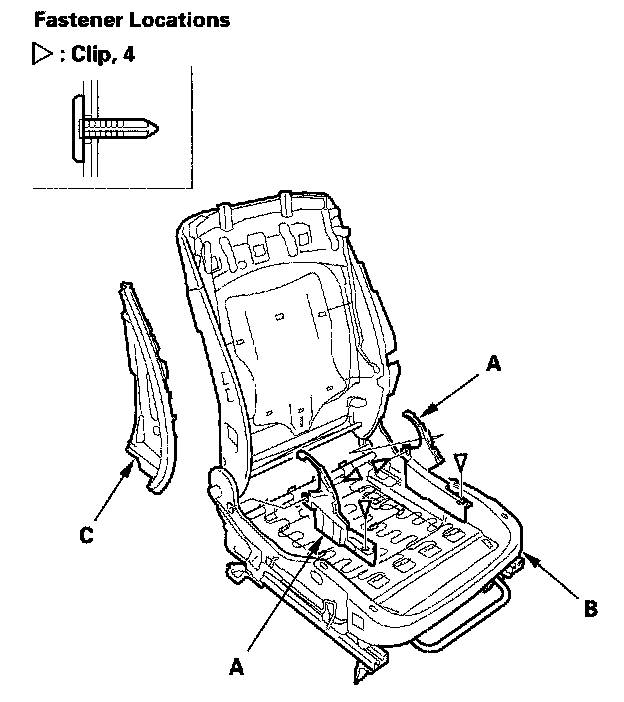
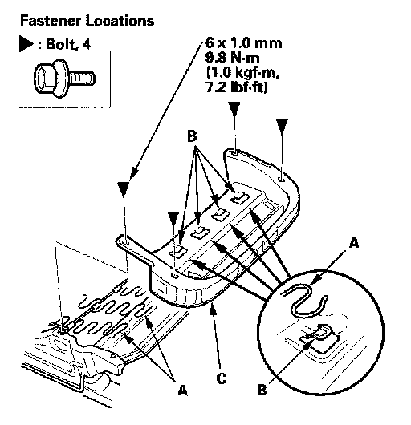
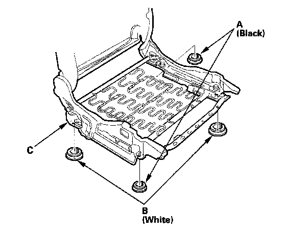
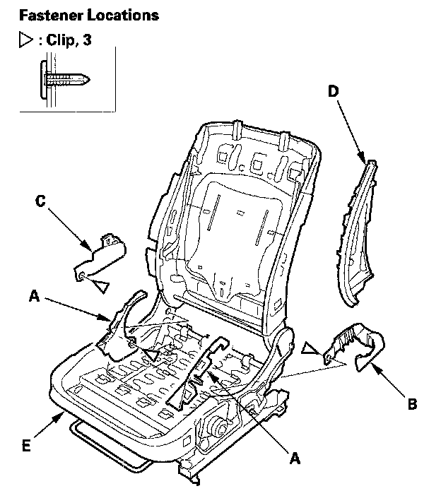

Front Seat Frame Replacement
Front Seat Frame ReplacementPassenger's Seat - 2-door
Calibrate the ODS unit after any of the these actions:
- Front passenger's seat replacement (including any seat components)
- Replacement of the seat weight sensors
- After a vehicle collision
NOTE:
- Put on gloves to protect your hands.
- Apply oil to the pivot portions of the slide locks.
- Apply multipurpose grease to the sliding portions of the seat tracks.
- Make sure the ODS unit connectors are plugged in properly.
- Make sure the ODS wires are routed properly so they are not pinched and do not interfere with other parts.
- If the side airbag has deployed, replace the seat frame and related parts with new ones.
1. Remove the front seat.

2. Slide the front seat frame rearward fully, detach the clips, then remove the front rail covers (A) from the front of both seat tracks.

3. Slide the front seat frame forward fully, detach the clips, then remove the left rear rail cover (A) and the right rear rail cover (B) from the back of both seat tracks.
4. Remove these items:
- Front seat-back cover
- Front seat cushion cover
- Seat weight sensor, both sides
- ODS unit

5. Remove the clips, then remove the recline inner covers (A), and the side airbag module holder (B) from the seat frame (C).
6. Install the new seat frame in the reverse order of removal, and note these items:
- Check if the clips are damaged or stress-whitened, and if necessary, replace them with new ones.
- Push the clips into place securely.
Passenger's Seat - 4-door
Calibrate the ODS unit after any of the these actions:
- Front passenger's seat replacement (including any seat components)
- Replacement of the seat weight sensors
- After a vehicle collision
NOTE:
- Put on gloves to protect your hands.
- Apply oil to the pivot portions of the slide locks.
- Apply multipurpose grease to the sliding portions of the seat tracks.
- If the side airbag has deployed, replace the seat frame and related parts with new ones.
1. Remove the front seat.
2. Remove these items:
- Front seat-back cover
- Front seat cushion cover
- ODS unit

3. Remove the clips, then remove the recline inner covers (A) from the seat frame (B), with side airbag remove the module holder (C).

4. Remove the bolts, and release the seat cushion springs (A) from the hooks (B), then remove the seat cushion frame (C).
5. Remove the seat weight sensors.

6. If necessary, remove the bushing (A, B) from the seat cushion frame (C).
7. Install the new seat frame in the reverse order of removal, and note these items:
- Make sure the ODS unit connector is plugged in properly.
- Check if the clips are damaged or stress-whitened, and if necessary, replace them with new ones.
- Push the clips into place securely.
Driver's Seat
Check the operation of the driver's seat position sensor after any of these actions:
- Driver's seat position sensor replacement
- Cover plate (front side of driver's seat slide rail) replacement
NOTE:
- Put on gloves to protect your hands.
- Apply oil to the pivot portions of the slide lock.
- Apply multipurpose grease to the sliding portions and pivot portions of the seat tracks.
- If the side airbag has deployed, replace the seat frame and related parts with new ones.
1. Remove the front seat.
2. Remove these items:
- Front seat back cover/pad
- Front seat cushion cover/pad
- Seat position sensor

3. Remove the clips, then remove the recline inner covers (A), outer upper rail cover (B), inner upper rail cover (C) and the module holder (D) from the seat frame (E).
4. Install the new seat frame in the reverse order of removal, and note these items:
- Make sure seat position sensor connector is plugged in properly.
- Check if the clips are damaged or stress-whitened, and if necessary, replace them with new ones.
- Push the clips into place securely.